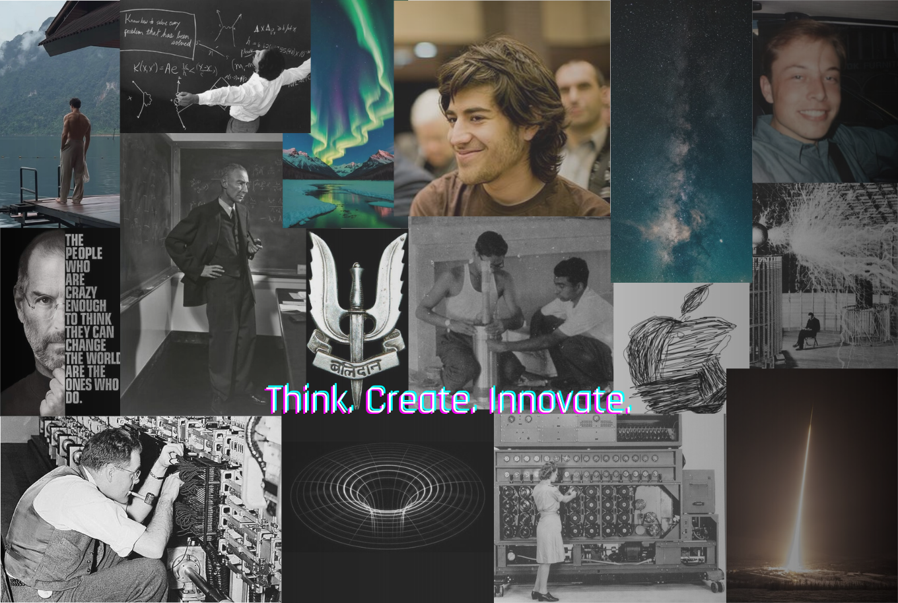

yo
If you have ever written your first line of code, you know the drill—print "Hello, World!", hit run, feel like a god. But if life had a console, what would your first line be? Mine would be something like: print("Figuring things out.. kinda").
Introductions are weird. We try to sum ourselves up in neat sentences, but people are like code—messy, constantly debugging, sometimes stuck in infinite loops of overthinking. We evolve, update, crash, reboot. So, consider this blog an open-source life project—one commit at a time. This site is a collection of thoughts—tech, creativity, philosophy, and the in-between moments. Expect posts on books, movies, music, tech, and the occasional existential crisis. It is structured chaos—sometimes introspective, sometimes playful, but always curious.
I’m into books, movies, music, photography, tech, philosophy, and sometimes just staring at the ceiling questioning existence (highly underrated hobby)
Machines fascinate me, but so do people. And if there’s one thing I’ve learned, it’s that every person we meet leaves a line of code in us—something they say, do, a joke, a conversation—it sticks. We’re all just running different versions of ourselves, shaped by those we cross paths with.
Somewhere in Dead Poets Society, John Keating says, "No matter what anybody tells you, words and ideas can change the world." Maybe that’s why we write, why we code, why we create. Not just to build something functional, but something meaningful.
A thought that sparks another. A ripple in someone else’s mind. We’re all just trying to make sense of things—our own Carpe Diem, one line at a time.
So, what’s the goal of this blog? Maybe it’s a space to dump thoughts, explore ideas, and share things that make me go, "huh, that’s interesting." Maybe it’ll turn into something structured, or maybe it’ll be as unpredictable as my sleep schedule. Either way, we move.
Oh, and before you go, I’ve put together an image below of the people who inspire me—figures from tech, science, and beyond who’ve shaped the way I think.
Shoutout to Melano and Angkul, from whom I found this website, cloned it, added my own tweaks—I love them for that and thank them.
return "See you in the next update."
image for reference below
(please drop some suggestions in my dms to improve this page.)
. -. -..